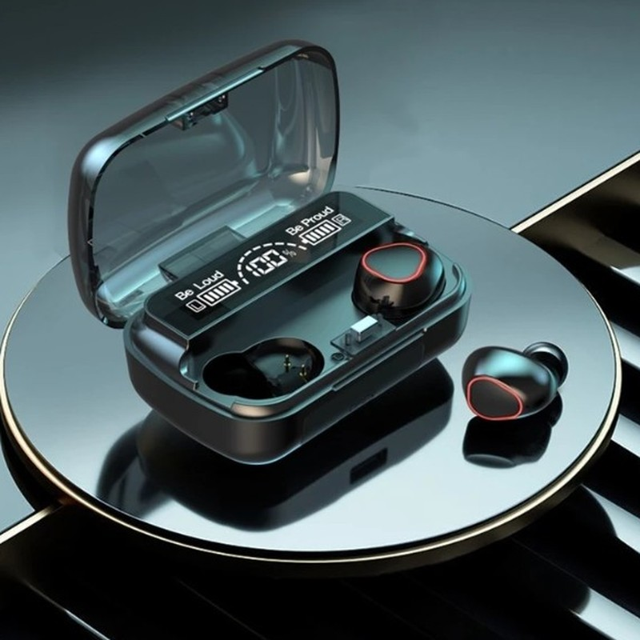

TECH SECRETO
@techsecreto.br
🔐 Sites, IAs e truques que parecem ilegais (mas não são). Todos os links dos vídeos estão aqui.

Fone M10 com visor LEDFone sem fio com case que mostra a bateria no visor e ainda carrega o celular.Ver na Shopee →🔥 Sites do vídeo mais novotoque e veja os links⭐ Ferramentas que eu uso
ElevenLabsTransforma qualquer texto em narração com voz super realista. É a IA de voz que eu mais indico.Testar grátis →Achados Tech na ShopeeFones, carregadores, luzes LED e gadgets de tecnologia com preço baixo e frete grátis em muitos.Ver ofertas →GammaCria apresentações, documentos e sites inteiros com IA em 1 minuto. Só escrever o tema.Testar grátis →📺 Links de cada vídeo
3 automações que fazem seu negócio vender mais ⚙️3
WhatsApp BusinessO WhatsApp Business responde sozinho com horário, preço e endereço.
cal.comO Cal deixa o cliente marcar horário sozinho, sem troca de mensagem.↗n8n.ioE o n8n liga um app no outro, pra tarefa repetida acontecer sozinha.↗Automatizei meu Instagram gastando R$ 0 💸3
ffmpeg.orgEu gravo no celular e o FFmpeg limpa o áudio sozinho, de graça.↗Gemini APIO Gemini assiste o vídeo e dá nota antes de eu postar.
GitHub PagesE o meu link da bio fica no ar de graça no GitHub.
Uma IA respondendo seus comentários, de graça 💬3
API do InstagramA API oficial da Meta é grátis e deixa um programa ler os seus comentários.
ClaudeA IA escreve a resposta no seu jeito de falar, sem cara de robô.
Meta Business SuiteE o Business Suite agenda os posts da semana inteira de uma vez.
Meu Instagram se monta sozinho: eu só gravo a voz3
Claude CodeO Claude Code escreve o roteiro e monta o vídeo direto no meu computador.
remotion.devO Remotion transforma o roteiro em vídeo, com legenda e cortes, por código.↗Robô no TelegramEu só respondo com o áudio.
3 sites que te deixam mais inteligente 🧠3
musiclab.chromeexperiments.comNo Chrome Music Lab você aprende música brincando, sem saber nada.↗seeing-theory.brown.eduO Seeing Theory explica estatística com animações que você mexe.↗pudding.coolE o The Pudding conta histórias com dados de um jeito viciante.↗3 IAs que consertam qualquer foto 📸3
cleanup.picturesO Cleanup apaga pessoa, objeto ou texto da foto com um rabisco.↗photoroom.comO Photoroom tira o fundo da foto em um segundo.↗imgupscaler.comE o Img Upscaler deixa foto pequena e borrada em alta resolução.↗Descubra se seus dados já vazaram3
haveibeenpwned.comColoca seu e-mail e ele mostra em quais vazamentos você apareceu.↗virustotal.comRecebeu link estranho? O VirusTotal checa com dezenas de antivírus.↗justdeleteme.xyzE o JustDeleteMe ensina a apagar contas que você nem usa mais.↗3 sites que mostram o céu ao vivo 🛰️3
satellitemap.spaceO Satellite Map mostra todos os satélites em volta da Terra, ao vivo.↗stellarium-web.orgO Stellarium mostra as estrelas exatamente como estão no seu céu hoje.↗heavens-above.comE o Heavens Above avisa a hora que a estação espacial passa na sua cidade.↗Pesquisa de horas em minutos, com fontes 📚3
PesquisaNo modo Pesquisa, o Claude lê dezenas de sites sobre o assunto.
FontesE entrega um relatório com o link de cada fonte, pra você conferir.
Seus arquivosEle ainda pode cruzar a pesquisa com os seus arquivos do Drive.
O Claude que usa o navegador por você 🖱️3
Claude no ChromeCom a extensão do Chrome, o Claude abre páginas e clica por você.
FormuláriosEle preenche formulário, compara preço e organiza abas.
Você aprovaE antes de fazer algo importante, ele pede a sua permissão.
Pare de repetir tudo pra IA: o Claude lembra 🧠3
ProjetosNos Projetos você guarda seus arquivos e instruções num lugar só.
InstruçõesEscreve uma vez como você quer as respostas, e ele segue sempre.
MemóriaE a memória faz ele lembrar das conversas anteriores, sem você repetir nada.
O Claude cria apps sem você programar nada3
JogosVocê descreve o jogo e ele aparece pronto pra jogar, do lado da conversa.
CalculadorasPede uma calculadora de gastos e ele monta uma ferramenta que funciona de verdade.
PublicarE com um clique você publica e manda o link pra qualquer pessoa usar.
3 skills do Claude que te poupam horas3
ApresentaçõesManda o assunto e a skill de apresentação monta os slides inteiros, prontos pra baixar.
PlanilhasVocê só explica o que quer.
Skill CreatorSem programar nada.
3 conectores do Claude que parecem trapaça 🔌3
CanvaCom o Canva conectado, você pede o post e o Claude cria o design pronto pra editar.
Gmail e DriveNo Gmail e no Drive, ele resume a sua caixa de entrada e acha aquele arquivo perdido em segundos.
Claude no ChromeE o Claude no Chrome navega pelos sites, clica e preenche formulário por você.
3 poderes escondidos do Claude3
SkillsEle usa sozinho quando precisa.
ConectoresEle trabalha direto nas suas coisas.
MCPQualquer ferramenta pode virar uma peça nova pro Claude.
3 IAs grátis que vão te salvar3
deepl.comTraduz até documento inteiro.↗goblin.toolsPerfeito pra quem procrastina.↗photoroom.comE o Photoroom tira o fundo de qualquer foto e cria imagem de produto profissional.↗3 sites que parecem ilegais — parte 53
marinetraffic.comClica e vê o nome e pra onde vai.↗musiclab.chromeexperiments.comO Chrome Music Lab deixa qualquer pessoa criar música brincando, sem saber tocar nada.↗artsandculture.google.comE o Google Arts and Culture coloca museus do mundo inteiro no seu celular.↗3 sites que eu queria ter conhecido antes3
downdetector.com.brWhatsApp parou? Você descobre se é só com você.↗justwatch.comO JustWatch mostra em qual streaming está o filme ou série que você quer ver.↗alternativeto.netE o AlternativeTo mostra alternativas grátis pra qualquer programa pago.↗3 sites que todo mundo devia conhecer — parte 23
ilovepdf.comO iLovePDF faz tudo com PDF: junta, separa, comprime e converte pra Word.↗privnote.comO Privnote cria uma mensagem que se autodestrói depois de lida.↗haveibeenpwned.comColoca seu e-mail e ele mostra se seus dados já vazaram. Se aparecer, troca a senha hoje.↗3 sites que parecem ilegais — parte 43
thetruesize.comArrasta o Brasil pra cima da Europa e entende.↗radiooooo.comEscolhe um país e uma década e ele toca as músicas da época.↗zoom.earthE o Zoom Earth, com imagens de satélite do planeta quase ao vivo.↗3 IAs grátis que parecem mágica3
krea.aiO Krea transforma o que você rabisca em imagem, em tempo real, enquanto você mexe.↗quickdraw.withgoogle.comO Quick Draw é um jogo do Google: você desenha e a IA tenta adivinhar antes do tempo acabar.↗napkin.aiE o Napkin pega um texto e transforma em gráfico, fluxograma e mapa mental.↗3 sites que todo mundo devia conhecer3
temp-mail.orgSite pedindo cadastro? Usa esse e foge do spam.↗squoosh.appO Squoosh, do Google, diminui o tamanho de qualquer foto sem perder qualidade.↗tinywow.comPDF, vídeo, imagem, sem instalar nada.↗3 sites que parecem ilegais — parte 33
lightningmaps.orgVocê vê a tempestade chegando antes do trovão.↗earth.nullschool.netFuracão, frente fria, tudo.↗neal.funJogos e curiosidades que viciam.↗3 IAs grátis que parecem ilegais — parte 23
perplexity.aiO Perplexity é um buscador com IA que responde direto e mostra de onde tirou cada informação.↗ideogram.aiLogo, convite, capa.↗elevenlabs.io⭐ recomendadoDá pra testar de graça.Testar grátis →3 sites que deviam ser proibidos — parte 23
flightradar24.comClica em um e vê de onde saiu e pra onde vai.↗windy.comVento, chuva e tempestade se mexendo ao vivo.↗web.archive.orgColoca qualquer site e volta no tempo pra ver como ele era anos atrás.↗3 IAs grátis que deviam ser pagas3
notebook.googleVocê manda um PDF e ele resume tudo e ainda vira um podcast.↗gamma.app⭐ recomendadoVocê escreve o tema e ele monta a apresentação inteira em menos de um minuto.Testar grátis →suno.comVocê descreve uma música e ele cria ela completa, cantada, do zero.↗3 sites que parecem ilegais — parte 13
radio.gardenRádios ao vivo do mundo inteiro: gire o planeta e escute↗photopea.comUm Photoshop completo no navegador, de graça↗vocalremover.orgA IA separa a voz do instrumental de qualquer música↗Nada encontrado. Tente outro nome.
Ebook (em breve)
100 sites e IAs secretasA lista completa, organizada por tema. Lançamento em breve aqui.⏳